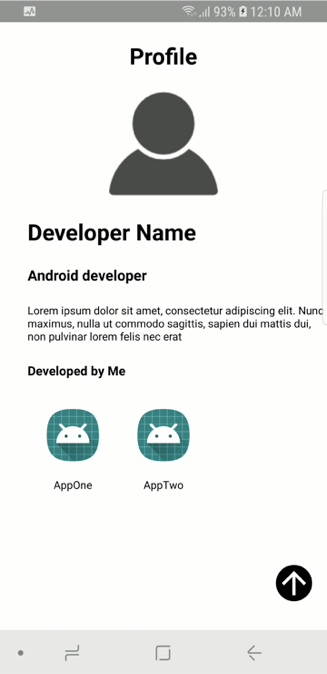
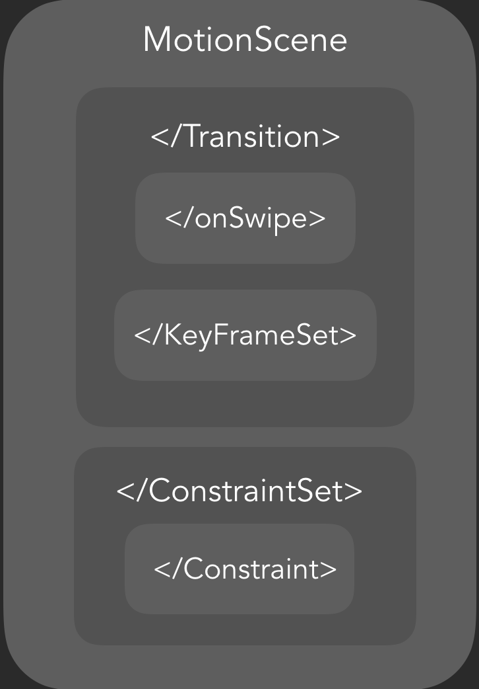
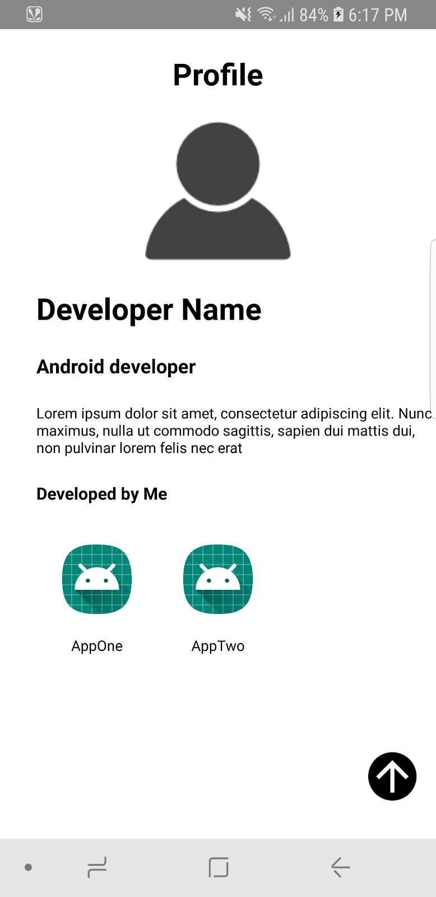
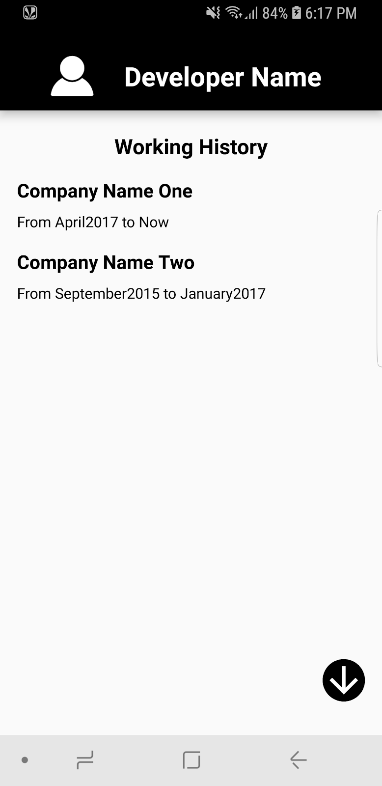
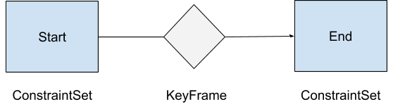
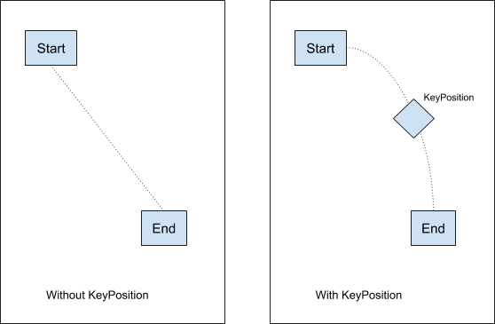

Motion Layout is a new class available in the ConstraintLayout 2.0 library.
MotionLayout is subclass of ConstraintLayout, by default it inherits all capabilities of ConstraintLayout .It supports from API level 18. It helps Android developers manage motion and widget animation in their application.
Android framework provides many ways to add animations:
Still something Missing?
It is very hard to Mix Layout transitions and Motion Handling(driving layout animations by touch)
MotionLayout solves this problem, we can drive every animations which will drive by touch.
We can say MotionLayout is a mix between the property animation framework, layout transitions with TransitionManager, and CoordinatorLayout.
In this codelab, you're going to build Dev101 app using MotionLayout. Your app shows:
|  |
This codelab is focused on MotionLayout. Non-relevant concepts and code blocks are glossed over and are provided for you to simply copy and paste.
Click the following link to download starting code for this codelab:
Unpack the downloaded zip file and open it with Android Studio 3.2.
Check the following:
androidx.constraintlayout:constraintlayout:2.0.0-alpha2 Added to app level gradleminSdkVersion 18targetSdkVersion 28Check top level tag of activity_main.xml under res directory in opened project is androidx.constraintlayout.motion.widget.MotionLayout,if not change it.
MotionScene encapsulates the rules needed for MotionLayout.
It contains ConstraintSets, Transition, KeyFrames and Touch handling which all used for animations.
MotionScene structure will be like this: (needed for this codelab), for detailed structure check this.

Create main_motion_scene.xml under res/xml directory
Now reference this xml file from MotionLayout like this:
//Add this tag to MotionLayout in activity_main.xml
app:layoutDescription="@xml/main_motion_scene"Add top level MotionScene tag in file main_motion_scene.xml
<MotionScene xmlns:android="http://schemas.android.com/apk/res/android"
xmlns:motion="http://schemas.android.com/apk/res-auto">
</MotionScene>Add Transition tag to MotionScene
<Transition
motion:constraintSetEnd="@layout/end_scene_layout"
motion:constraintSetStart="@layout/start_scene_layout"></Transition>Where start_scene_layout.xml and end_scene_layout.xml are two ConstraintLayout files.
Transitions available tags are :
duration:Length of time to take to perform the transitionstaggered:a quick way to stagger the objects movinginterpolator:The ability to set an overall interpolation (anticipate, bounce, easeIn, easeInOut, easeOut, linear)This will drive the transition, by matching the motion of your finger
Common parameters
touchAnchorId : id of the Object we should track(top, left, right, bottom)touchAnchorSide : the side of the Object to movedragDirection: which side to swipe from (dragUp, dragDown, dragLeft, dragRight)maxAcceleration: how quickly animation should accelerate on touch upmaxVelocity: limit the velocity of animation on touch upmoveWhenScrollAtTop : (true/false) whether we want transition to happen while scrolling is happeningdragScale : Don't know what this is YetWe will track topBackgroundView and drag direction will up from anchor side will be bottom.
Add following code:
<OnSwipe
motion:dragDirection="dragUp"
motion:touchAnchorId="@id/topBackgroundView"
motion:touchAnchorSide="bottom" />Run the app now. You can see nice animation on swiping up.
Instead of rewriting layouts , we can use ConstraintSets.
|  |
ConstraintSet of first layout start_scene_layout.xml is with id :start_scene
//Add this code inside MotionScene
<ConstraintSet android:id="@+id/start_scene">
<Constraint
android:id="@id/topBackgroundView"
android:layout_width="match_parent"
android:layout_height="match_parent"
android:background="@android:color/white"/>
<Constraint
android:id="@id/profileTV"
android:layout_width="wrap_content"
android:layout_height="wrap_content"
android:layout_marginTop="20dp"
android:textColor="@android:color/black"
motion:layout_constraintEnd_toEndOf="parent"
motion:layout_constraintStart_toStartOf="parent"
motion:layout_constraintTop_toTopOf="parent" />
<Constraint
android:id="@id/userIV"
android:layout_width="120dp"
android:layout_height="120dp"
android:layout_marginTop="20dp"
motion:layout_constraintEnd_toEndOf="parent"
motion:layout_constraintStart_toStartOf="parent"
motion:layout_constraintTop_toBottomOf="@id/profileTV"/>
<Constraint
android:id="@id/usernameTV"
android:layout_width="wrap_content"
android:layout_height="wrap_content"
android:layout_marginStart="30dp"
android:layout_marginTop="20dp"
motion:layout_constraintStart_toStartOf="parent"
motion:layout_constraintTop_toBottomOf="@id/userIV"/>
<Constraint
android:id="@id/designationTV"
android:layout_width="wrap_content"
android:layout_height="wrap_content"
android:layout_marginStart="30dp"
android:layout_marginTop="20dp"
motion:layout_constraintStart_toStartOf="parent"
motion:layout_constraintTop_toBottomOf="@id/usernameTV" />
<Constraint
android:id="@id/descriptionTV"
android:layout_width="0dp"
android:layout_height="wrap_content"
android:layout_marginStart="30dp"
android:layout_marginTop="20dp"
motion:layout_constraintEnd_toEndOf="parent"
motion:layout_constraintStart_toStartOf="parent"
motion:layout_constraintTop_toBottomOf="@id/designationTV" />
<Constraint
android:id="@id/appsList"
android:layout_width="wrap_content"
android:layout_height="wrap_content"
android:layout_marginStart="30dp"
android:layout_marginTop="16dp"
motion:layout_constraintStart_toStartOf="parent"
motion:layout_constraintTop_toBottomOf="@id/developedByMeTV" />
<Constraint
android:id="@id/developedByMeTV"
android:layout_width="0dp"
android:layout_height="wrap_content"
android:layout_marginStart="30dp"
android:layout_marginTop="20dp"
motion:layout_constraintStart_toStartOf="parent"
motion:layout_constraintTop_toBottomOf="@id/descriptionTV" />
<Constraint
android:id="@id/showMoreButton"
android:layout_width="40dp"
android:layout_height="40dp"
android:layout_margin="20dp"
motion:layout_constraintBottom_toBottomOf="parent"
motion:layout_constraintEnd_toEndOf="parent"
motion:layout_constraintHorizontal_bias="0.95"
motion:layout_constraintStart_toStartOf="parent"
motion:layout_constraintTop_toTopOf="parent"
motion:layout_constraintVertical_bias="0.95" />
</ConstraintSet>
|  |
ConstraintSet of second layout end_scene_layout.xml is with id:end_scene
//Add this code inside MotionScene
<ConstraintSet android:id="@+id/end_scene">
<Constraint
android:id="@id/topBackgroundView"
android:layout_width="match_parent"
android:layout_height="80dp"
android:background="@android:color/black"
android:elevation="10dp"/>
<Constraint
android:id="@id/userIV"
android:layout_width="40dp"
android:layout_height="40dp"
android:elevation="10dp"
motion:layout_constraintBottom_toTopOf="@id/top_guideline"
motion:layout_constraintEnd_toEndOf="parent"
motion:layout_constraintHorizontal_bias="0.15"
motion:layout_constraintStart_toStartOf="parent"
motion:layout_constraintTop_toTopOf="parent"/>
<Constraint
android:id="@id/profileTV"
android:layout_width="wrap_content"
android:layout_height="wrap_content"
android:layout_marginTop="20dp"
android:alpha="0"
android:elevation="10dp"
android:scaleX="0"
android:scaleY="0"
android:textColor="@android:color/white"
motion:layout_constraintEnd_toEndOf="parent"
motion:layout_constraintStart_toStartOf="parent"
motion:layout_constraintTop_toTopOf="parent" />
<Constraint
android:id="@id/usernameTV"
android:layout_width="wrap_content"
android:layout_height="wrap_content"
android:elevation="10dp"
motion:layout_constraintBottom_toTopOf="@id/top_guideline"
motion:layout_constraintEnd_toEndOf="parent"
motion:layout_constraintHorizontal_bias="0.34"
motion:layout_constraintStart_toEndOf="@id/userIV"
motion:layout_constraintTop_toTopOf="parent"/>
<Constraint
android:id="@id/designationTV"
android:layout_width="wrap_content"
android:layout_height="wrap_content"
android:layout_marginStart="30dp"
android:layout_marginTop="20dp"
android:alpha="0" />
<Constraint
android:id="@id/descriptionTV"
android:layout_width="0dp"
android:layout_height="wrap_content"
android:layout_marginStart="30dp"
android:layout_marginTop="20dp"
android:alpha="0" />
<Constraint
android:id="@id/appsList"
android:layout_width="wrap_content"
android:layout_height="wrap_content"
android:layout_marginStart="30dp"
android:layout_marginTop="16dp"
android:alpha="0"
motion:layout_constraintStart_toStartOf="parent"
motion:layout_constraintTop_toBottomOf="@id/developedByMeTV" />
<Constraint
android:id="@id/developedByMeTV"
android:layout_width="0dp"
android:layout_height="wrap_content"
android:layout_marginStart="30dp"
android:layout_marginTop="20dp"
android:alpha="0"
motion:layout_constraintStart_toStartOf="parent"
motion:layout_constraintTop_toBottomOf="@id/descriptionTV" />
<Constraint
android:id="@+id/showMoreButton"
android:layout_width="40dp"
android:layout_height="40dp"
android:layout_margin="20dp"
android:rotation="-180"
motion:layout_constraintBottom_toBottomOf="parent"
motion:layout_constraintEnd_toEndOf="parent"
motion:layout_constraintHorizontal_bias="0.95"
motion:layout_constraintStart_toStartOf="parent"
motion:layout_constraintTop_toTopOf="parent"
motion:layout_constraintVertical_bias="0.95" />
</ConstraintSet>Transition is referencing to layout files so change Transition(reference to ConstraintSets) to reference to Constraint sets instead of layout files
//Change this code of Transition tag inside MotionScene
motion:constraintSetEnd="@id/end_scene"
motion:constraintSetStart="@id/start_scene"Run the app now. You can see nice animation on swiping up(same as with two layouts).
Add showPaths = true to MotionLayout in activity_main.xml and observe somethings.
We got smooth animation by using two ConstraintSets directly inside MotionScene.
Let's point out properly animated views:
But let's point out some problems:
We'll solve all these problems in next steps.
We know Motion Layout supports these attributes out of the box:
We can declare CustomAttribute inside both ConstraintSets and KeyAttribute elements.
CustomAttribute has two attributes(attribute name and value type)
We specify attributeName, which matches the setter/getter of Object.
Value Type also need to be specified:
customColorValuecustomIntegerValuecustomFloatValuecustomStringValuecustomDimensioncustomBooleanWe are going to change background of topBackgroundView and textColor of usernameTV by adding CustomAttribute inside Constraint of specific View.
In start_scene
Inside topBackgroundView Constraint add following code
//Background color of topBackgroundView at starting of transition is white
<CustomAttribute
motion:attributeName="backgroundColor"
motion:customColorValue="@android:color/white" />Inside usernameTV Constraint add following code
//Text color of usernameTV is black at starting of transition is black
<CustomAttribute
motion:attributeName="textColor"
motion:customColorValue="@android:color/black" />In end_scene
Inside topBackgroundView Constraint add following code
//Background color of topBackgroundView at end of transition is black
<CustomAttribute
motion:attributeName="backgroundColor"
motion:customColorValue="@android:color/black" />Inside usernameTV Constraint add following code
//Text color of usernameTV at end of transition is white
<CustomAttribute
motion:attributeName="textColor"
motion:customColorValue="@android:color/white" />If we add above code we can see textColor of usernameTV and background color of topBackgroundView is changing.
Run the app now and check result.
You can see background color of backgroundColor and textColor of usernameTV is changing
Note:If title,description and appsList not visible while transition, it's ok. We will see about that in next steps.
We know ConstraintSets are resting states. If want a state to go through but not to stay in then we can use KeyFrames. So keyframes are intermediary states.

KeyFrames lets us specify a change at a point in time during the transition(interpolation between two states).
Available type of KeyFrames
Important attributes for every KeyFrame
motion:framePosition (At which frame 0 to 100 KeyFrame will apply)Motion:target (Which object will be affect by this KeyFrame)motion:transitionEasing (Which easing curve to use -default is linear, for Detailed explanation see this link)motion:curveFit (linear or spline - which interpolation curve is fitted to KeyFrame)Add KeyFrameSet inside Transition (KeyFrameSet contains KeyFrames)
<KeyFrameSet>
</KeyFrameSet>Add KeyAttribte to KeyFrameSet
//Elevation of topBackgroundView is 0 until 70 percent of trasnition
<KeyAttribute
android:elevation="0dp"
motion:framePosition="70"
motion:target="@id/topBackgroundView" />So by using alpha attribute we will make them disappear some where in middle of transition.
By using following code:
designationTV and descriptionTV will hide at 20 percent of time in transitionappsList and developedByMeTV will hide at 50 percent of time in transition//designationTV and descriptionTV alpha will be 0 at 20 percent of time, so this will hide faster compare to other textviews
<KeyAttribute
android:alpha="0"
motion:framePosition="20"
motion:target="@id/designationTV" />
<KeyAttribute
android:alpha="0"
motion:framePosition="20"
motion:target="@id/descriptionTV" />
//appsList and developedByMeTV alpha will become 0 at 50 percent of time, so this will hide after above views
<KeyAttribute
android:alpha="0"
motion:framePosition="50"
motion:target="@id/appsList" />
<KeyAttribute
android:alpha="0"
motion:framePosition="50"
motion:target="@id/developedByMeTV" />
We are changing topBackgroundView background color(Implemented in Custom attribute step). In transition it starts changing from start .Instead of changing it from start , add a KeyAttribute so that background color will change from 40 percent of time in transition.
We are changing usernameTV text color(Implemented in Custom attribute step).In transition it starts changing from start.instead of changing it from start , add a KeyAttribute so that background color will change from 80 percent of time in transition.
//topBackgroundView background will be white until 40 percent of transition time
<KeyAttribute
motion:framePosition="40"
motion:target="@id/topBackgroundView">
<CustomAttribute
motion:attributeName="backgroundColor"
motion:customColorValue="@android:color/white" />
</KeyAttribute>
//usernameTV text color will white until 80 percent of animation time
<KeyAttribute
motion:framePosition="80"
motion:target="@id/usernameTV">
<CustomAttribute
motion:attributeName="textColor"
motion:customColorValue="@android:color/black" />
</KeyAttribute>Run the app now and check result.
Specify an intermediary position at a particular time in transition
Allows to manipulate the motion path of widget

You can see above after adding KeyPosition it's giving curved motion. If you want to remove curved motion and want only linear motion then you can use curveFit="linear" on KeyPosition.
KeyPosition need to contain following attributes
target (the widget the KeyPosition apply to)framePosition (from 0 to 100, when does the KeyPosition applies)keyPositionType (the coordinate system used, parentRelative, deltaRelative, pathRelative , for detailed explanation see "Different coordinate systems" section in this link)percentX / percentY (the (x,y) coordinate of the position)We will change userNameTV path by adding KeyPosition, so that it will not intersect with profileIV during transition.
//usernameTV will go through intermediary position
<KeyPosition
motion:drawPath="path"
motion:framePosition="50"
motion:percentX="0.85"
motion:percentY="0.2"
motion:target="@id/usernameTV" />Run the app now and check result.(Add showPath=true to MotionLayout to see the path of usernameTV)
In this step, we will directly use concepts. To learn more about those concepts, please go through respective docs later.
Convert ImageView to ImageFilterView
//Replace userIV ImageView with androidx.constraintlayout.utils.widget.ImageFilterView
<androidx.constraintlayout.utils.widget.ImageFilterView
android:id="@+id/userIV"
android:layout_width="40dp"
android:layout_height="40dp"
android:src="@drawable/user_img_black"
app:altSrc="@drawable/user_img_white" />Add CusomAttribute crossfade to userIV Constraint
In start_scene add
<CustomAttribute
motion:attributeName="crossfade"
motion:customFloatValue="0" />In end_scene add
<CustomAttribute
motion:attributeName="crossfade"
motion:customFloatValue="1" />Run the app now and check result.
Drive transition onClick on showMoreButton(arrow button on bottom right corner).
showMoreButton.setOnClickListener {
if (mainMotionLayout.progress == 1f)
mainMotionLayout.transitionToStart()
else
mainMotionLayout.transitionToEnd()
}Run the app now and check result.
MotionLayout has TransitionListener.
call setMotionLayoutListener() from onCreate() method of MainActivity
//We are changing status bar color based on the progress of transition
private fun setMotionLayoutListener() {
mainMotionLayout.setTransitionListener(object : MotionLayout.TransitionListener {
override fun onTransitionChange(p0: MotionLayout?, p1: Int, p2: Int, progress: Float) {
setStatusBarColor(progress)
}
override fun onTransitionCompleted(p0: MotionLayout, p1: Int) {
if (p0.progress == 1f) setStatusBarColor(1f) else setStatusBarColor(0f)
}
})
}
private fun setStatusBarColor(percentage: Float) {
if (Build.VERSION.SDK_INT >= Build.VERSION_CODES.LOLLIPOP) {
window.statusBarColor = ArgbEvaluator().evaluate(percentage, Color.GRAY, Color.BLACK) as Int
}
}Run the app now and check result
You can observe status bar color changing while transition.
That's it.
If you want ,you can replace dummy data with your personal data.
You have successfully developed Dev101 App.
I hope you enjoyed the codelab.
Please read the MotionLayout series written by Nicolas Roard: Introduction to MotionLayout
This codelab is based on series written by Nicolas Roard.